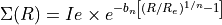
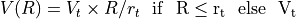

Galaxies angular momentum¶
Code author: Wilfried Mercier - IRAP <wilfried.mercier@irap.omp.eu>
Functions and classes related to angular momenta of galaxies.
-
class
galaxy.angularMomentum.SersicMomentum(n: Union[int, float] = 1, Re: Union[int, float] = 10, Ie: Union[int, float] = 10)[source]¶ -
Class which computes the angular momentum for a single Sérsic profile in the unnormalised case

and, in the normalised case

where .
-
custom_rotation_curve(rotation_curve: Callable[[...], Union[int, float]], r: Union[int, float], normalise: bool = True, r_norm: Union[int, float] = inf, args: List = []) Tuple[float, float][source]¶ -
Compute the angular momentum using a custom rotation curve up to radius r.
- Parameters
rotation_curve (func) – function representing the total rotation curve used to compute the angular momentum. Its first parameter must always be the radial distance r.
r (int or float) – distance up to which to compute the angular momentum
normalise (bool) – (Optional) whether to normalise by the first order moment of the light distribution. Default is True.
r_norm – (Optional) radius where to compute the normalisation. Only used if normalise is True. Default is inifinity.
args – (Optional) arguments to pass to the rotation curve function. Default is not argument (empty list).
- Returns
central angular momentum along the vertical axis using the custom rotation curve and its error. When normalised the unit is similar to r * rotation_curve
- Return type
tuple of int or float
- Raises
TypeError – if rotation_curve is not a callable function
ValueError – if r < 0
-
linear_ramp(r: Union[int, float], rt: Union[int, float], vt: Union[int, float], normalise: bool = True, r_norm: Union[int, float] = inf) Union[int, float][source]¶ -
Compute the angular momentum using a linear ramp model up to radius r whose rotation curve is

- Parameters
r (int or float) – radius where the angular momentum is computed
rt (int or float) – kinematical transition radius. Must be of the same unit as Re.
vt (int or float) – kinematical plateau velocity (must be positive)
normalise (bool) – (Optional) whether to normalise by the first order moment of the light distribution. Default is True.
r_norm – (Optional) radius where to compute the normalisation. Only used if normalise is True. Default is inifinity.
- Returns
central angular momentum along the vertical axis. When normalised, the unit is that of rt*vt.
- Return type
int or float
- Raises
ValueError – if * r < 0 * rt <= 0 * vt <= 0
-
norm(r: Union[int, float] = inf) Union[int, float][source]¶ -
Compute the normalisation factor for the angular momentum up to radius r.
- Parameters
r (int or float) – (Optional) radius where the normalisation is computed. By default the normalisation is computed at infinity.
- Returns
normalisation factor
- Return type
int or float
-
-
galaxy.angularMomentum.momentum(rt, vt, n=1, Re=10, Ie=10, normalise=True)[source]¶ -
Compute the analytical angular momentum for a single Sérsic profile and a ramp model rotation curve in the unnormalised case
and, in the normalised case
where
![\Sigma(R) &= Ie \times e^{-b_n \left [ (R/R_e)^{1/n} - 1 \right ]}
V(R) &= V_t \times R/r_t \ \ \rm{if}\ \ R \leq r_t \ \ \rm{else} \ \ V_t](../_images/math/f78fc85e6ad9aabfb2a6e9a36cf3ff68c8536437.png)
- Parameters
rt (int or float) – kinematical transition radius
vt (int or float) – kinematical plateau velocity (must be positive)
Ie (int or float) – (Optional) flux at Re
n (int or float) – (Optional) Sérsic index
normalise (bool) – (Optional) whether to normalise by the first order moment of the light distribution. Default is True
Re (int or float) – (Optional) effective radius. Must have the same unit as rt. Default is 10.
- Returns
central angular momentum along the vertical axis. When normalised, the unit is that of rt*vt.
- Return type
int or float
- Raises
ValueError – if rt <= 0 or vt <= 0
-
galaxy.angularMomentum.sersic_kthMoment(k: Union[int, float], vmin: Union[int, float], vmax: Union[int, float], n: Union[int, float] = 1, Re: Union[int, float] = 10, Ie: Union[int, float] = 10) Union[int, float][source]¶ -
Compute the kth radial moment for a Sérsic profile

- Parameters
k (int or float) – order of the moment
vmin (int or float) – lower bound to compute the kth moment. Must be greater than 0 and less than vmax. Should be the same unit as Re.
vmax (int or float) – upper bound to compute the kth moment. Must be greater than 0 and more than vmin. Should be the same unit as Re.
Ie (int or float) – (Optional) flux at Re
n (int or float) – (Optional) Sérsic index
Re (int or float) – (Optional) effective radius
- Returns
kth order moment
- Return type
int or float
- Raises
ValueError – if vmin<0 or vmin >= vmax